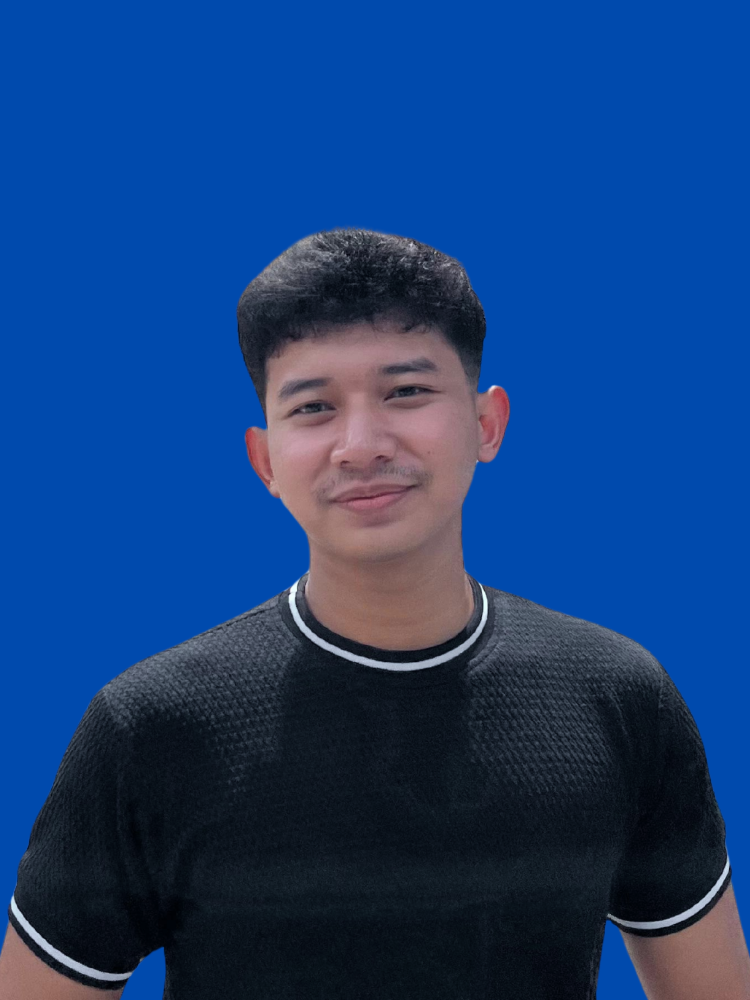

Rafa Akmal Widjaya
Mahasiswa Universitas Semarang
Saya adalah seorang mahasiswa Universitas Semarang, prodi Teknik Informatika. Selama menjalani pendidikan, saya telah mempelajari berbagai teknologi dan keahlian, termasuk HTML, CSS, JavaScript, PHP, MySQL, WordPress, Laravel, dan Bootstrap. Saya juga memiliki pengalaman Praktek Kerja Lapangan selama 6 bulan di perusahaan Izzaweb selama menjadi siswa SMK, di mana saya mendapatkan wawasan praktis di dunia teknologi serta pemograman, dan sertifikat PKL sebagai pengakuan atas dedikasi saya. Di luar aktivitas akademik, saya aktif berorganisasi. Saya aktif di organisasi Karang Taruna RT di lingkungan rumah saya dan memegang jabatan sebagai Ketua Humas di Ikatan Remaja Masjid, di mana saya belajar mengelola komunikasi, membangun relasi, dan menyukseskan berbagai kegiatan komunitas. Hobi saya yaitu futsal dan membaca, yang dapat membantu supaya tetap seimbang antara aktivitas fisik dan mental. Saya selalu tertarik untuk belajar hal baru dan terbuka untuk peluang yang dapat membantu saya berkembang lebih jauh di bidang teknologi.
